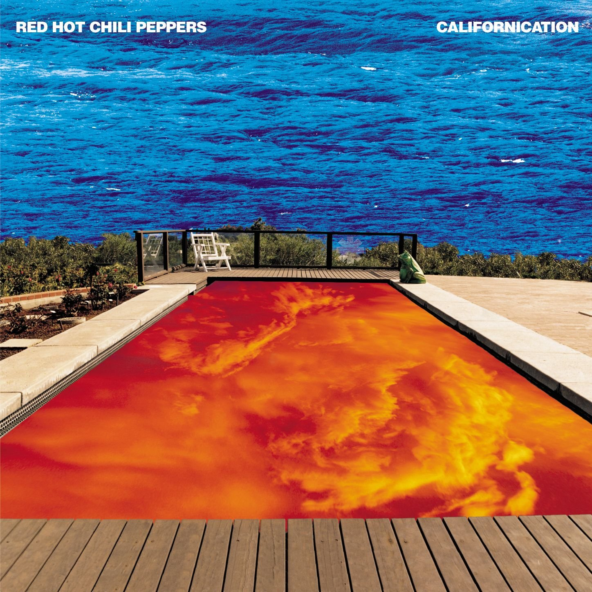
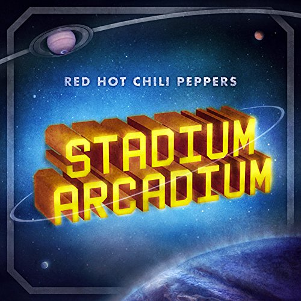
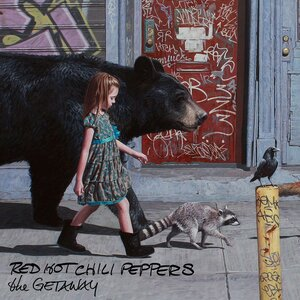
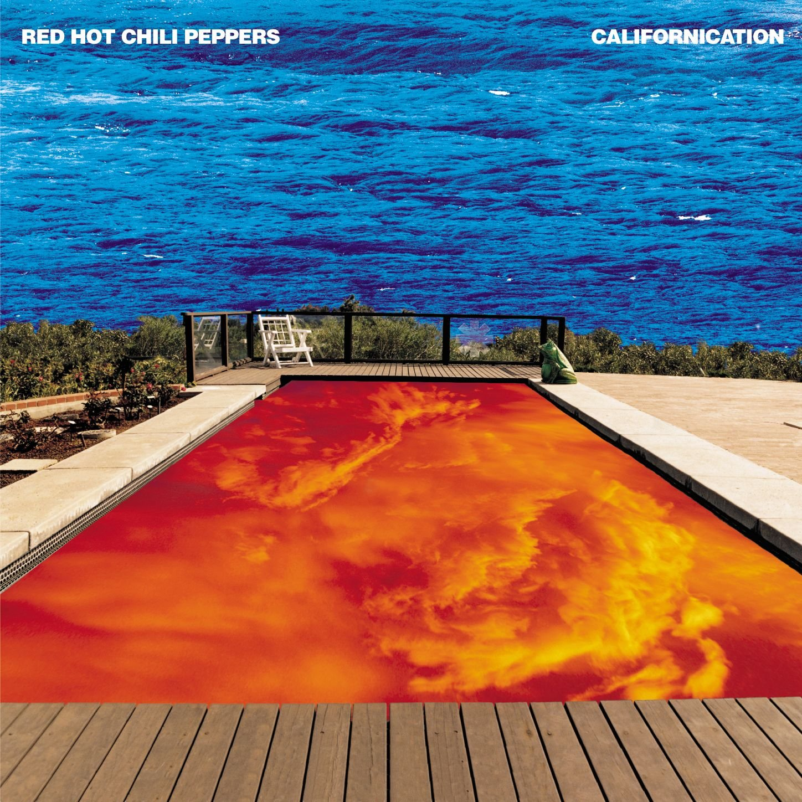
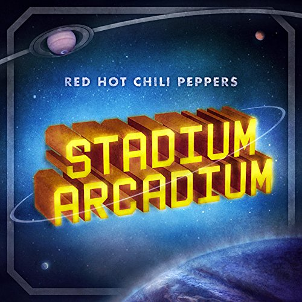
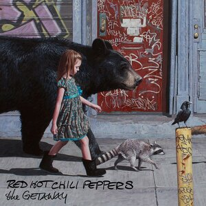

This is a website dedicated to some of the craziest musicians. Who are just as crazy as they were in the 90's. The Red Hot Chili Peppers.
The band formed in Los Angeles in 1983. The members were vocalist Anthony Kiedis, bassist Flea, guitarist Hillel Slovak, and drummer Jack Irons. Irons left the band when Slovak passed away due to a drug overdose in 1988. They were replaced by Gutarist John Frusciante and drummer Chad Smith. This would become the lineup they are best know for.They gained a following with albums like Mother's milk and One Hot Minute. However they're most influential release was in 1999 with the release of Californication. The released By The Way in 2002 and Stadium Arcadium in 2007. In 2009 Frusciante left the band and was replaced Josh Klinghoffer. They would release two albums in 2011 and 2017 with Josh
Yeah, you don't know my mind you don't know my kind dark necessities are part of my design -- Dark Necessities, The Getaway
 

| Anthony Kiedis | Vocalist | 1983-Present | |
| Micheal 'Flea' Balzary | Bassist | 1983-Present | |
| Hillel Slovak | Guitarist | 1983;1985-1988 | |
| Jack Irons | Drummer | 1983; 1985-1988 | |
| John Frusciante | Guitarist | 1988-1992; 1998-2009; 2019-Present | |
| Chad Smith | Drummer | 1988-Present | |
| Josh Klinghoffer | Guitarist | 2009-2019 |
Merch: Red Hot Chili Peppers Merch
Spotify: Red Hot Chili Peppers